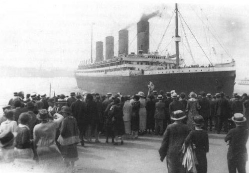

Titanic Belfast is a visitor attraction and a monument to Belfast's maritime heritage
on the site of the former Harland & Wolff shipyard in the city's Titanic Quarter where the
RMS Titanic was built.
1909
Construction of Titanic began on March 31, 1909 when
designer James Andrews laid the first keel plate in the
Harland & Wolff Shipyards Belfast, Ireland.

1911
31 May 1911 - the date on which the Titanic was launched
into the Victoria Channel in Belfast Lough from a slipway
at the Queen's Yard of the Harland & Wolff shipyard.
1912
The sinking of the RMS Titanic occurred on the night of
14 April through to the morning of 15 April 1912 in the North
Atlantic Ocean, four days into the ship's maiden voyage from Southampton
to New York City.
The Wreckage
The wreck of the RMS Titanic lies at a depth of about 12,500
feet (3,800 m) (2.37 miles (3.81 km)), about 370 miles (600 km)
south-southeast off the coast of Newfoundland.